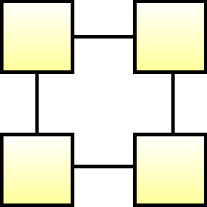

\documentclass[tikz]{standalone}
\usetikzlibrary{shadows,chains,scopes}
\usetikzlibrary{decorations.pathmorphing, shapes}
\begin{document}
\begin{tikzpicture}
[
start chain=going right,
node distance=5mm,
every on chain/.style={
thick,
draw=black,
top color=white,
bottom color=yellow!40,
font=\sffamily\small,
minimum width=6mm,
minimum height=6mm,
%drop shadow,
%label={below:block \tikzchaincount},
},
decoration={coil},
dna/.style={decorate, thick, decoration={aspect=0, segment length=5cm}},
% post join/.style={
% -stealth,
% line width=1.5mm,
% red,
% rounded corners=1mm,
% },
square/.style={thick,
draw=black,
top color=white,
bottom color=black!10,
font=\sffamily\small,
minimum width=12mm,
minimum height=10mm,
drop shadow},
every label/.style={
font=\sffamily\scriptsize
},
]
\draw[dna, decoration={amplitude=.15cm}] (0,-0) -- (1.1,-0);
\draw[dna, decoration={amplitude=.35cm}] (1.15,0) -- (1.15,-1.1);
\draw[dna, decoration={amplitude=.35cm}] (1.15,-1.1) -- (0,-1.1);
\draw[dna, decoration={amplitude=.35cm}] (0,-1.1) -- (0,0);
% \draw[dna, decoration={amplitude=.15cm}] (.1,-0) -- (1.5,-0);
%
% \draw[dna, decoration={amplitude=.15cm}] (2.25,-0) -- (3.65,-0);
% %\draw[dna, decoration={amplitude=.35cm}] (.9,-0) -- (1.5,-0);
% \draw[dna, decoration={amplitude=.15cm}] (1.85,-0) -- (3.25,-0);
%
% \draw[dna, decoration={amplitude=.15cm}] (.5,-2.5) -- (1.9,-2.5);
% %\draw[dna, decoration={amplitude=.35cm}] (.9,-0) -- (1.5,-0);
% \draw[dna, decoration={amplitude=.15cm}] (.1,-2.5) -- (1.5,-2.5);
%
% \draw[dna, decoration={amplitude=.15cm}] (2.25,-2.5) -- (3.65,-2.5);
% %\draw[dna, decoration={amplitude=.35cm}] (.9,-0) -- (1.5,-0);
% \draw[dna, decoration={amplitude=.15cm}] (1.85,-2.5) -- (3.25,-2.5);
%% Path for dots
\node [on chain] {};
\node [on chain] {};
\node [on chain=going below] {};
{[continue chain=going left]
\node [on chain] {};
}
%\node[square,left of= chain-6] {G};
{[transparency group, opacity=.25]
% \draw [post join] (chain-1.south) |- (chain-3.center) |- (chain-6.center) -- (chain-6.north);
}
%\path (chain-3.south) -- (chain-4.north) node [black, font=\Huge, midway, sloped,xshift=0cm] {$\dots$};
%\node[] at (1.75,-1.25) { \textsc{BLOCKCHAIN}};
\end{tikzpicture}
\end{document}Created by David Li